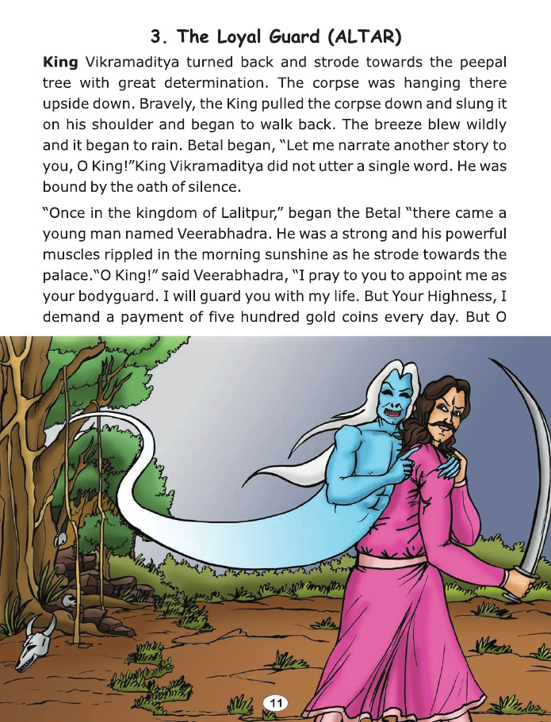

5. A promise not kept
It was a dark night and was raining from time to time.Gusts of wind shook
the
trees. There were strange noises and in between the thunderclaps the moaning of
jackals could be heard.Flashes of lightning revealed fearsome faces and there were
strange and mysterious laughter of the spirits.
But inspite of such a weird atmosphere king Vikramaditya did not
swerve a bit. He climbed the ancient tree to bring the corpse down
and soon he began crossing the desolate cremation ground, with the
corpse lying on his shoulder.
The Betaal then narrated this story.The ruler of Kishanagar, Rajendra, was
extremely strong and courageous. He was a good ruler and cared about his people
very much as he would not do anything unjust. His subjects were happy and
contented. They had no problems. His queen, Prema, gave birth to a beautiful
daughter, Sona
Suppose if our kingdom face an enemy in the future, he should be able to fight & defeat them in war. If you agree to this condition then, you may make an announcement". The King & Queen were very proud to hear about their daughter's thoughts.The announcement was made in Kishanagar as well as in the neighbouring kingdoms. Thinking that Sona is only a girl,and it should not be a difficult to win a fight with her, many suitors came forward to accept her challenge as they also knew that Sona being the only heir they would have complete sway over the kingdom once they married her. |